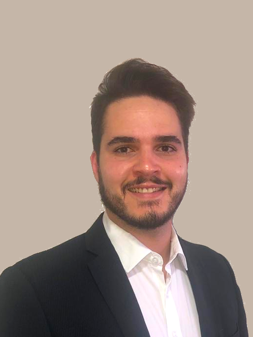

Gustavo Matheus Cerqueira

Engenheiro Civil de formação e estudante de Desenvolvimento de Software
na Trybe.
Possuo dupla cidadania, brasileira e portuguêsa. Atualmente moro em Belo
Horizonte, Minas Gerais.
Qualidades
- Aprendizado rápido e com qualidade.
- Vontade de sempre aprender novas tecnologias e ferramentas
-
Conhecimento em desenvolvimento:
- HTML
- CSS
- JavaScript
- Bootstrap
- Ruby
- Python
- Inglês avançado
- Espanhol intermediário
-
Vivencia internacional nos Estados Unidos e Espanha
- MBA em Gestão Estratégica de Negócios
Experiências
-
RIBE Engenharia. Belo Horizonte / MG (set/2017 - jul/2018)
Estagiário na construção de um prédio residencial de nove andares, com
dois apartamentos por andar. Desde a concretagem das lajes até os
retoques finais para a entrega dos apartamentos. Análise de preços e
características, seguida de compra materiais em diferentes fases da
construção; verificação da execução do cronograma de trabalho; medições
de materiais no local em dif
-
Construtora GUIA. Sede em Nova Lima / MG (abr/2016 - jul/2016)
Estagiário na reforma total de um prédio histórico de vinte andares,
projetado para ser o novo local dos escritórios de juízes do Tribunal de
Justiça de Minas Gerais. Responsável pela verificação, no local, da
realização do cronograma do trabalho; supervisão de projetos e execução
nas áreas de hidráulica, elétrica e de prevenção de incêndio; cálculo e
verificação de consumo de materiais utilizados em diferentes etapas e
projetos.
-
Montar Armaduras para Concreto Ltda. Contagem / MG (jun/2013 -
jun/2015)
Estagiário em uma planta industrial de porte médio, com cerca de 80
funcionários. Leitura, interpretação e criação do gerenciamento de
produção de projetos de estruturas internas de aço para estruturas de
concreto através do software de detalhamento de vergalhões Graphico Pro
da Schnell Software.